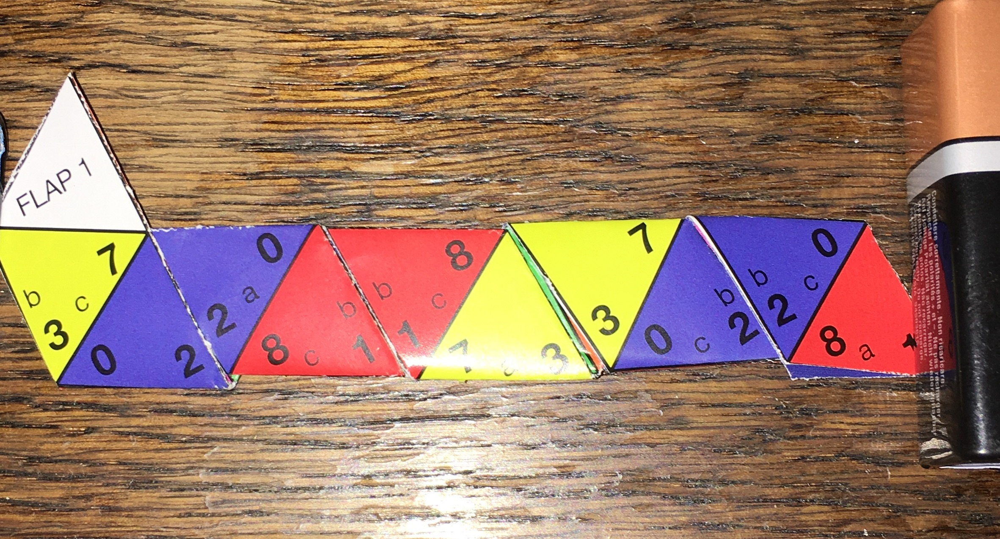

Hexahexaflexagon
Table of Contents
1 Introduction
- The hexahexaflexagon is an example of something called a finite state machine, which is an important concept in Computer Science.
- Follow these instructions to build one.
Build It
- Step 1: Get the flexagon template, and print it onto card. Your teacher will supply you with one.
- Step 2: Put a neat crease down the centre, ensuring you're careful to be accurate.
- Open it back up, then apply prit-stick to the back of the flexagon template, then glue the template back together so it looks like this:
- Step 3: Flip the template over and rotate it so that it's this way up:
- We're going to start to fold up the flexagon. As before, you'll need to ensure you're as precise as possible when making your folds, to ensure it works as smoothly as possible.
- Start by folding the two purple trianges on to each other, so it looks like this:
- Then fold the green onto the green triangle…
- Then the orange onto the orange, purple to purple and so on until your template looks like this:

- Step 4: Now, starting at the 'flap 1' end, fold the two blue triangles (labelled 2 above) onto each other, so it looks like the photo below:

- Step 5: Fold the next two blue triangles (also labelled 2) onto each other. Your flexagon should now look like the photo below.
- Step 6: Fold the next two blue triangles onto each other (labelled 2b). Once you've folded them together, tuck 'flap 2' back behind the flexagon. It should look like the photo below (I've used a pair of scissors to stop the flexagon from springing open):
- Step 7: Fold flap 1 back behind the flexagon, then turn the whole flexagon over to it looks like this:
- Step 8: To finish, use a tiny amount of hot glue to stick flap 1 and flap 2 together.
- You've now produced a hexahexaflexagon. In the next page, you'll see how to use it!